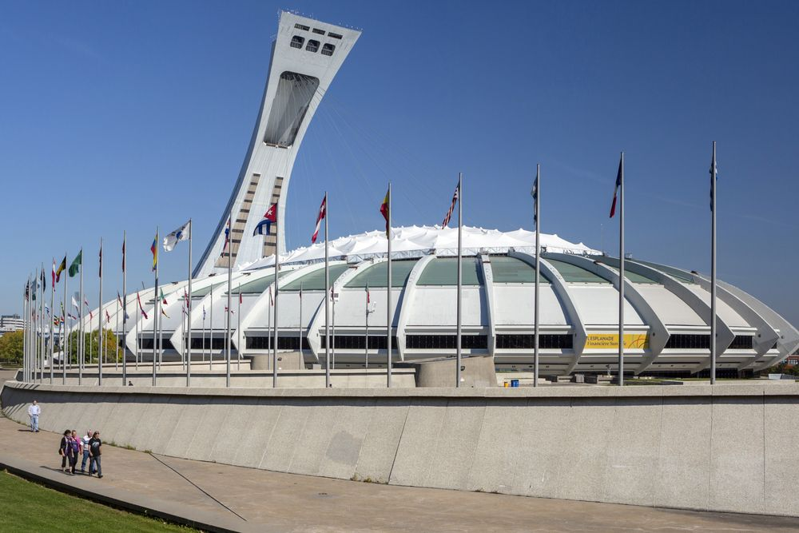
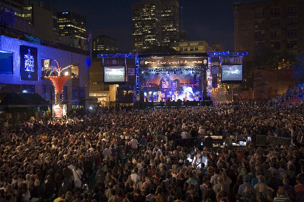
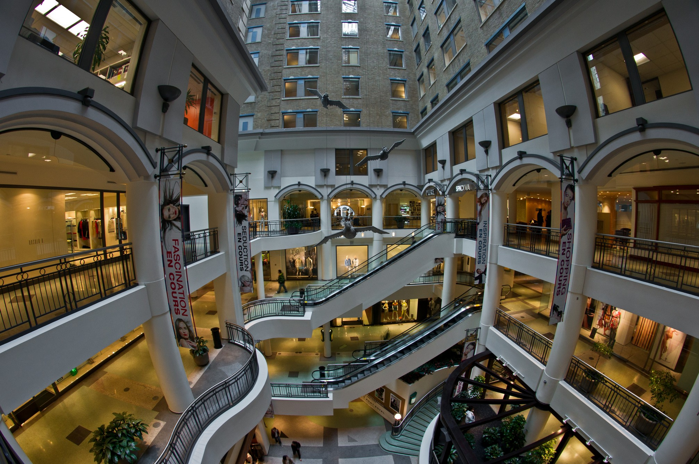

Olympic Stadium (Montreal)
Olympic Stadium (French: Stade olympique) is a multi-purpose stadium in Canada, located at Olympic Park in the Hochelaga-Maisonneuve district of Montreal. Built in the mid-1970s as the main venue for the 1976 Summer Olympics, it is nicknamed "The Big O", a reference to both its name and to the doughnut-shape of the permanent component of the stadium's roof. It is also called "The Big Owe" to reference the astronomical cost of the stadium and the 1976 Olympics as a whole.
The stadium is the largest by seating capacity in Canada. After the Olympics, artificial turf was installed and it became the home of Montreal's professional baseball and football teams. The Montreal Alouettes of the CFL returned to their previous home of Molson Stadium in 1998 for regular season games, but continued to use Olympic Stadium for playoff and Grey Cup games until 2014 when they returned to Molson Stadium for all of their games. Following the 2004 baseball season, the Expos relocated to Washington, D.C. to become the Washington Nationals. The stadium currently serves as a multipurpose facility for special events (e.g. concerts, trade shows) with a permanent seating capacity of 56,040.The capacity is expandable with temporary seating. The Montreal Impact of Major League Soccer (MLS) use the venue on occasion, when demand for tickets justifies the large capacity or when the weather restricts outdoor play at nearby Saputo Stadium in the spring months.
Montreal International Jazz Festival
The Festival International de Jazz de Montréal (English: Montreal International Jazz Festival) is an annual jazz festival held in Montreal, Quebec, Canada. The Montreal Jazz Fest holds the 2004 Guinness World Record as the world's largest jazz festival. Every year it features roughly 3,000 artists from 30-odd countries, more than 650 concerts (including 450 free outdoor performances), and welcomes over 2 million visitors (12.5% of whom are tourists) as well as 300 accredited journalists. The festival takes place at 20 different stages, which include free outdoor stages and indoor concert halls.
Underground City, Montreal
RÉSO, commonly referred to as The Underground City (French: La ville souterraine), is the name applied to a series of interconnected office towers, hotels, shopping centres, residential and commercial complexes, convention halls, universities and performing arts venues that form the heart of Montreal's central business district, colloquially referred to as Downtown Montreal. The name refers to the underground connections between the buildings that compose the network, in addition to the network's complete integration with the city's entirely underground rapid transit system, the Montreal Metro. Moreover, the first iteration of the Underground City was developed out of the open pit at the southern entrance to the Mount Royal Tunnel, where Place Ville Marie and Central Station stand today.
More Sites of interest in Ontario